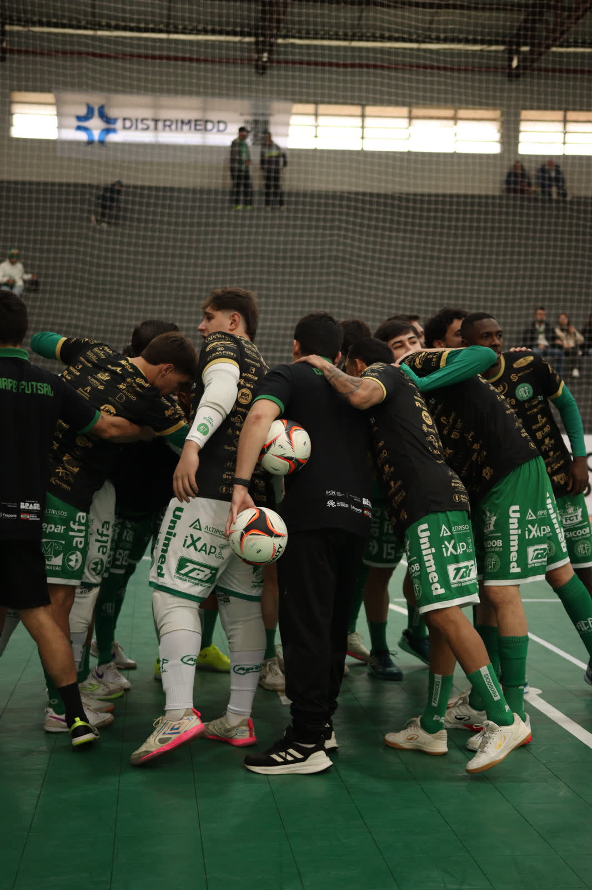
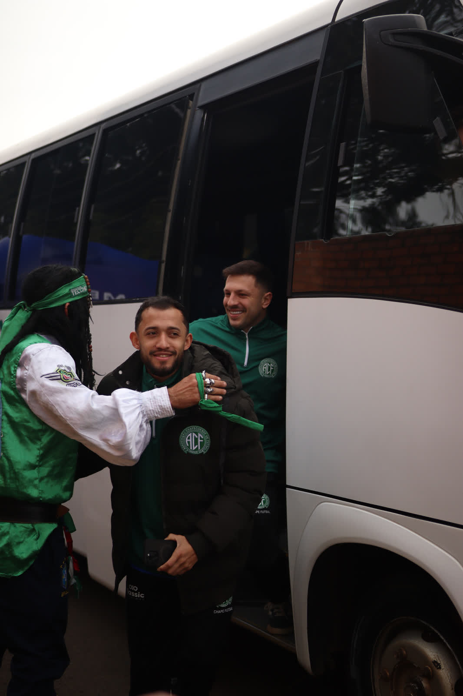

A noite deste sábado (8/8) reserva um grande jogo de futsal no ginásio do SESC. Às 19h, a Prefeitura de Chapecó/Chapecoense/Unochapecó recebe o Sorriso, do Mato Grosso, pela quarta rodada do Campeonato Brasileiro. Uma vitória coloca o Verdão das Quadras na vice-liderança da competição.

O time do técnico Leo Schroeder vem de um belo resultado. Na semana passada, a equipe verde-branca ganhou do América por 4 a 1, em Minas Gerais. A Chapecoense aparece em terceiro lugar com seis pontos e se vencer ultrapassa Fazenda-PR (9 pontos) ou São João do Jaguaribe-CE (7), pulando para a segunda colocação. Isso porque os dois clubes acima na classificação se enfrentam neste domingo (9), às 11h, no Paraná.
“Vamos ter um jogo difícil. A nossa equipe vem de um resultado positivo e importante fora de casa, que nos deixou em uma boa colocação dentro do campeonato. Mas, sabemos da importância desta partida no SESC, contra um forte time. Os jogadores vêm trabalhando bem, focados, fazendo o que está sendo pedido e corrigindo os erros dos últimos jogos. Esperamos ter uma grande atuação diante do nosso torcedor e buscar a vitória”, disse Leo. O Sorriso está em quinto, com quatro pontos.
Ingressos
Os bilhetes custam R$ 20,00 (1º lote), R$ 25,00 (2º lote) e R$ 10,00 (meia-entrada). Crianças até 12 anos têm acesso gratuito, sem a necessidade de retirar a cortesia, mas é obrigatório apresentar documento de identificação na portaria e estar acompanhado por um responsável.
A venda antecipada ocorre nas lojas Oficial da Chape Futsal (na rua Paulo Marques, entre as ruas Fernando Machado e Porto Alegre, anexo à Classic Uniformes) e iXap Sports (na avenida Getúlio Vargas, entre as ruas Paulo Marques e Vitório Cella), além do site ingressojogo.com.br. É possível comprar ingresso na hora do confronto, no local.
Lado social
Além do ticket, incluindo cortesias, ou da carteirinha de sócio, o torcedor deve levar um quilo de alimento não perecível para ter acesso ao ginásio. As doações serão destinadas ao programa Mesa Brasil, mantido pelo SESC.
Pré-jogo
A torcida está convidada para participar do Esquenta da Chape Futsal. A movimentação inicia ao meio-dia na rua lateral do SESC Chapecó. Será servido churrasco, terá pagode e haverá exposição de patrocinadores do clube. A recepção aos atletas também acontecerá neste local.

Crédito das fotos: @rogersilva_fotografia/@achapefutsal